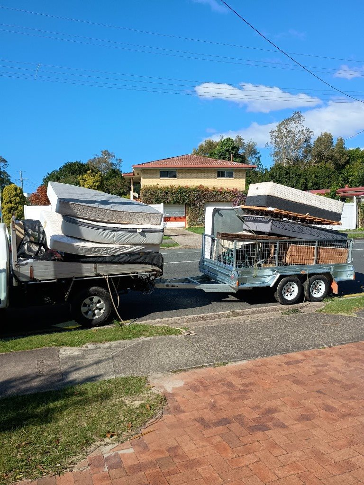
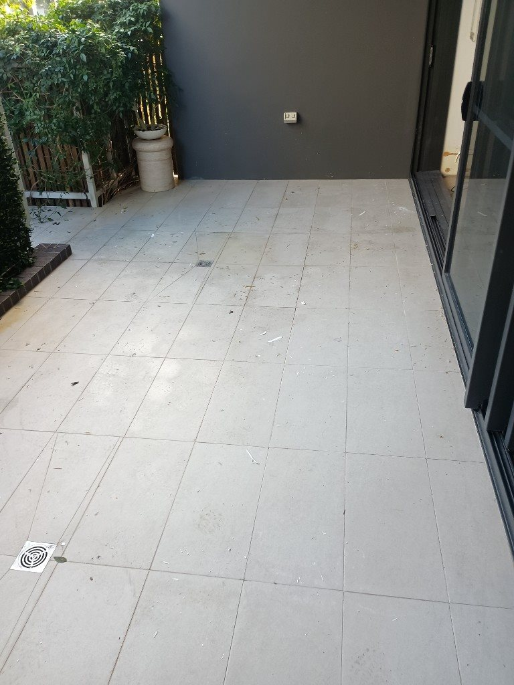

“Awesome service from Matt and his team — fast response, excellent communication, and went over and above to accommodate our needs quickly. Would highly recommend!”
Alana Paulin
7 reviews
New estates around Aura generate a steady stream of moving boxes, flat-pack packaging, landscaping offcuts and renovation waste — often while tradies are still on site and driveways are already full. Waymaker Rubbish Solutions provides rubbish removal Aura homeowners and builders can schedule when handover dates slip and the garage becomes a storage zone overnight.
From furniture and household rubbish to building materials and property clean outs across the Sunshine Coast growth corridor, we quote upfront and take care of loading and disposal so you are not stuck with a skip bin to fill yourself. Call 0423 101 334 or send photos for a quick quote before your next delivery arrives.
Aura is growing fast, and with new homes, renovations, landscaping and people constantly moving in, unwanted rubbish can build up just as quickly. Waymaker provides reliable rubbish removal across Aura, Baringa, Nirimba and surrounding communities, helping homeowners, builders and local businesses clear the mess and get their space back.
Whether it is moving boxes and furniture, renovation waste, building materials or a larger property or site clean up, our crew takes care of the heavy lifting, loading and disposal from start to finish. You get straightforward pricing, friendly local service and responsible disposal with recycling prioritised wherever possible.
No skip bin sitting around. No loading it yourself. Just point us to what needs to go and we will get it gone.
We also provide rubbish removal throughout surrounding Sunshine Coast suburbs including:
More service areas: Maroochydore · Caloundra · Nambour · Buderim · Mooloolaba · Coolum Beach · View all Sunshine Coast rubbish removal areas
Rubbish removal pricing depends on the amount of rubbish, the type of materials and access to the property. Waymaker provides upfront quotes so you know the expected cost before work begins.
Our standard pricing includes loading, transport and base disposal fees. Send us a few photos of what needs to go and your location and we can usually provide a straightforward quote before booking.
| Load size | Typical price | Good for |
|---|---|---|
| Small Load | $120 to $180 | A few items, boxes or a small cleanup |
| 1/4 10 x 5 Trailer Load | $180 to $250 | Small household cleanouts or bulky items |
| 1/2 10 x 5 Trailer Load | $250 to $300 | Furniture, household junk or renovation waste |
| 3/4 10 x 5 Trailer Load | $300 to $350 | Larger cleanouts and mixed rubbish |
| Full 10 x 5 Trailer Load | $350 to $450 | Maximum standard load for bigger cleanups |
| Full Ute Load and 10 x 5 Trailer Load | from $650 | Maximum standard load for bigger cleanups |
| Heavy Materials | Custom quote | Concrete, soil, bricks, tiles and other heavy waste |
Heavy materials such as concrete, soil, bricks and tiles require a custom quote due to their weight and disposal costs. Specialised or regulated waste may also require separate disposal arrangements.

Waymaker provides rubbish removal for everything from a few unwanted household items to larger property and commercial clean outs. Our team handles the lifting and loading, then transports the rubbish for appropriate disposal.
Clear unwanted furniture, household rubbish, garage clutter, mattresses, whitegoods, moving waste and other unwanted items without having to load and transport everything yourself.
Rubbish removal for offices, retail premises, hospitality businesses, property managers and commercial sites, including furniture, general waste and clearances.
Fast property clearances for end of lease situations, abandoned belongings, pre sale clean ups and properties that need to be cleared before the next tenant or owner.
Respectful assistance clearing unwanted items and rubbish from deceased estates, with care taken around the property and belongings throughout the process.
Every clean up is different. Waymaker can remove a wide range of common household, property, commercial and renovation rubbish, with the lifting, loading and transport taken care of.
Not sure whether we can take something? Send us a photo and we will let you know before booking.
A skip bin can be useful when you need a container on site for several days and want to load the rubbish gradually. If your rubbish is already ready to go, a full service rubbish removal team can be a more convenient option.
With Waymaker, there is no skip bin to load yourself. We arrive, load the rubbish, take it away and handle the disposal.
For furniture removal, household clean outs, rental clearances and smaller renovation clean ups, this can save considerable time and physical work.


Pricing depends on how much rubbish needs to be removed, the type of materials and access to the property. Smaller collections generally start from our standard small load pricing, while larger clean outs are quoted according to volume. Send us a few photos for a quick estimate.
Yes. Our team handles the lifting and loading as part of the service. You simply show us what needs to go and we take care of the rest.
No. Waymaker provides a full rubbish removal service, so there is no need to hire or load a skip bin. We load the rubbish directly and take it away.
We remove many common types of household rubbish, furniture, green waste, property waste and renovation rubbish. Heavy materials and specialised waste may require a separate quote. Send us a photo if you are unsure about a particular item.
Yes. We can remove unwanted furniture, mattresses and other bulky household items as part of a larger clean out or as a smaller collection.
Yes. Waymaker assists businesses, property managers, real estate agencies and commercial clients with rubbish removal and property clearances.
Call Waymaker on 0423 101 334 or send us photos showing what needs to be removed along with the property location. We will provide a straightforward quote based on the job.
Send Waymaker a few photos of what needs to go and we can provide a straightforward quote. We handle the lifting, loading and disposal so you can get the space cleared without the hassle.
Real Sunshine Coast feedback
“Awesome service from Matt and his team — fast response, excellent communication, and went over and above to accommodate our needs quickly. Would highly recommend!”
Alana Paulin
7 reviews
“Matthew was very friendly, and did such a great job with removing rubbish and taking it to the tip. 100% recommend his service.”
Luke P
1 review
“I cant speak highly enough about Matts work ethic. He does everything with great punctuality, pricing and thoroughness. I would recommend his services to anyone wanting the job done right”
G J
1 review
“Matt was great to deal with, kept me informed with all processes and timing. Would definitely use his services again.”
Wendy Lower
2 reviews